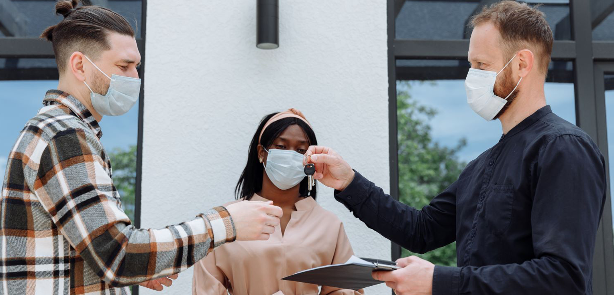

If you're in the market for commercial real estate rental in Austin, it's important to have a broker who understands the market and can help you find the right property for your needs. A good broker will have a wealth of resources at their disposal, including an extensive network of contacts in the industry. They will also be up-to-date on the latest trends in the market and know about new properties that are coming onto the market.
The best time to start looking for a commercial real estate rental in Austin is when you have a clear idea of what you need. It's important to work with a real estate agent who understands your needs and can help you find the right property for your business. You may want to start looking in the early stages of your business planning so that you have plenty of time to find the right property. However, if you're already in the process of setting up your business, it's still a good idea to start looking for a rental as soon as possible.
There are a few things to keep in mind when searching for commercial real estate in Austin to rent. The first is to consider your budget. It's important to have a realistic idea of how much you can afford to spend on rent each month. Once you have a budget in mind, you can start searching for properties that fit within your price range. Another thing to keep in mind is the size of the property you need. You'll want to make sure that the property you choose is large enough to accommodate your business needs. Finally, you'll want to think about the location of the property. You'll want to choose a location that's convenient for your customers and employees.
When it comes to finding commercial real estate rentals in Austin, there are a few different types of properties to choose from. Here is a brief overview of the most common types of rentals available:
When you are looking for commercial real estate rentals in Austin, it is important to consider all of your options. There are a variety of different types of properties available, so you can find one that fits your needs. With a little bit of research, you should be able to find the perfect space for your business.
Finding the right commercial property for your business can be a daunting task. There are many things to consider, such as size, location, and price. A real estate agent can help you navigate through the process and find the right property for your needs.
Real estate agents have a wealth of knowledge about the commercial real estate market. They know which areas have the best selection of properties and which areas are growing or declining. They also have access to a variety of listings, including both for sale and rent properties.
Working with a real estate agent can save you time and money. Agents can help you find the right property quickly and negotiate the best deal possible. They can also help you with the paperwork and other aspects of the transaction.
If you're looking for commercial real estate rental in Austin, contact Austin Tenant Advisors today. They will be happy to help you find the perfect property for your business.
When looking for commercial real estate in Austin to rent, there are a few things you should keep in mind. The most important factor is the purpose of the property. Ask yourself what you will use the space for and how much square footage you need. There are many different types of commercial properties to choose from, so it is important to know what is available and what will fit your needs.
Another thing to consider when renting commercial property is your budget. Make sure you have an idea of how much you can afford to spend each month on rent and other associated costs, such as utilities and maintenance. It is also important to be aware of any zoning restrictions that may apply to the property you are interested in.
Finally, it is always a good idea to work with a real estate agent when searching for commercial property. They can help you find the best options available and negotiate the best deal on your behalf of you.
When looking for a commercial property to rent, it's important to know what the average prices are in your area. In Austin, TX, commercial rentals cost an average of $21.50 per square foot, with prices ranging from $10 to $40 per square foot.
Several factors will affect the price you pay for a commercial property. The size and location of the property will be the biggest factors, but other things like the type of property and the availability of parking can also affect the price.
If you're not sure what you need in a commercial rental, or if you're not familiar with the area, it's best to work with a real estate agent who can help you find the right property and negotiate a good price.
When looking for a commercial property to rent, there are a few things to keep in mind. The most important thing to remember is to read the lease agreement before signing it. Some things you will want to be sure to check for include:
If you have any questions about the lease agreement, it is best to ask your real estate agent for clarification before signing. They can help you understand everything in the agreement and ensure you are getting what you expect from the property.
One of the best ways to find a great property for your business is to work with a professional real estate agent. When you're looking for commercial real estate rental in Austin, it's important to work with someone who knows the market inside and out. A good real estate agent will have a wealth of resources at their disposal, including a list of properties that are currently available for rent. They can also help you negotiate a lease agreement and advise you on what to look for in a property. If you're interested in finding a property for your business, contact Austin Tenant Advisors in Austin today.